P05: Series de Fourier en tiempo continuo
- Enriquez Melendez Jesus
- Rosas Palacios Alan
- Irvin Joshep Camacho Dominguez
- Solano Castrejón Eric
Contents
Introduccion
Podemos calcular Dn numericamente usando la DFT (La tranformada discreta de Fourier),que usa las muestras de una señal periodica x(t) durante un periodo. El intervalo de muestreo es T segundos. Por lo tanto, hay 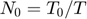 numero de muestras en un periodo 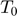. 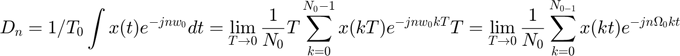 Donde x(kT) es la kth muestra de x(t) y 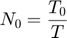 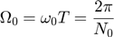 En la practica, es imposible hacer qeu T--->0 al calcular el lado derecho de la ecuacion. Podemos hacer que T sea pequeño, pero no cero, lo que hara que los datos aumente sin limite. Por lo tanto, ignoraremos el limtite de T en la ecuacion con el entendimiento implicito de que T es razonablemente pequeño. T distinto de cero dara como resultado algun error computacional, que es inevitable en cualquier evaluacion numerica de una integral. El error resultante de T distinto de cero se denomina error de alias. Por lo tanto, podemos expressar la ecuacion como 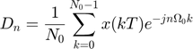 Como 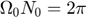 por lo tanto podemos reducir la ecuacion como 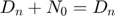 La propiedad de periodicidad Dn+N0=Dn significa que mas alla de n=N0/2, los coeficientes representan los valores para n negativo. Por ejemplo, cuando N0=32,D17=D-15,D18=D-14,...,D31=D-1.El ciclo se repite nuevamente desde n=32 en adelante.
Problema 1 : Ejemplo 6.1
Trigonometrica 4 armonicos
a0=0.504; b0=0; an=@(n) (2*0.504)/(1+16*(n^2)); bn=@(n) (8*0.504*n)/(1+16*(n^2)); t0=0; tf=pi; f=@(t) exp(-t/2); armo=4; a=-7; b=10; sfcT(t0,tf,an,bn,a0,b0,f,armo,a,b)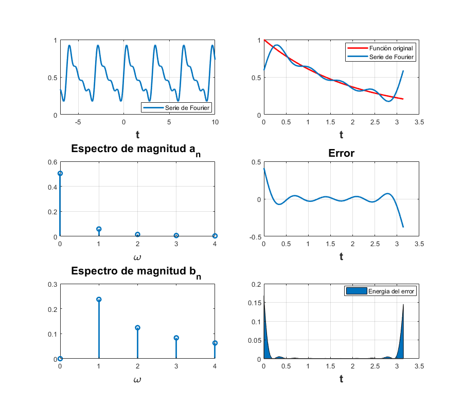
Trigonometrica 15 armonicos
clf; a0=0.504; b0=0; an=@(n) (2*0.504)/(1+16*(n^2)); bn=@(n) (8*0.504*n)/(1+16*(n^2)); t0=0; tf=pi; f=@(t) exp(-t/2); armo=15; a=-7; b=10; sfcT(t0,tf,an,bn,a0,b0,f,armo,a,b)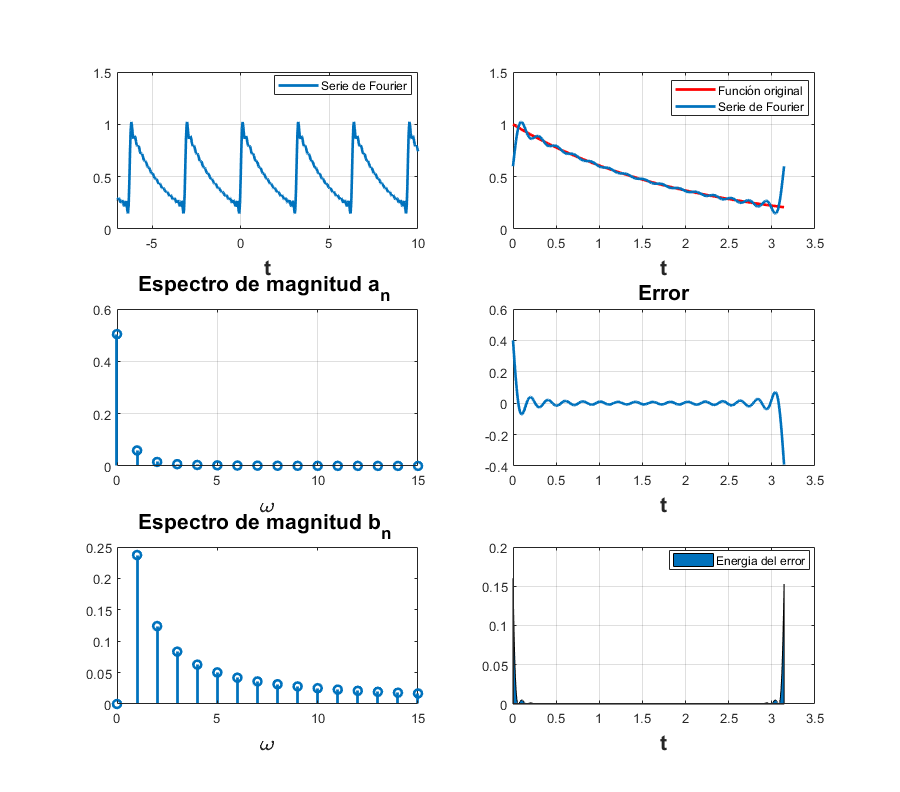
Problema 2
Exponencial 4 armonicos
clf; d0=0; dn=@(n) (12/((n*pi).^2)).*abs(sin(n*pi/2)).*exp((-pi/2)*n*1i); t0=-0.5; tf=1.5; f=@(t)(6.*t).*((t>=-0.5)&(t<=0.5))+(6.*(1-t)).*((t>0.5)&(t<=1.5)); armo=4; a=-5; b=5; sfc(t0,tf,dn,d0,f,armo,a,b)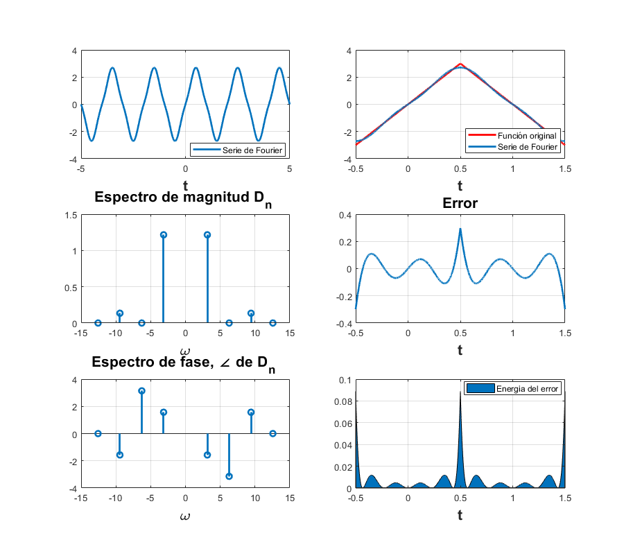
Exponencial 15 armonicos
clf; d0=0; dn=@(n) (12/((n*pi).^2)).*abs(sin(n*pi/2)).*exp((-pi/2)*n*1i); t0=-0.5; tf=1.5; f=@(t)(6.*t).*((t>=-0.5)&(t<=0.5))+(6.*(1-t)).*((t>0.5)&(t<=1.5)); armo=15; a=-5; b=5; sfc(t0,tf,dn,d0,f,armo,a,b)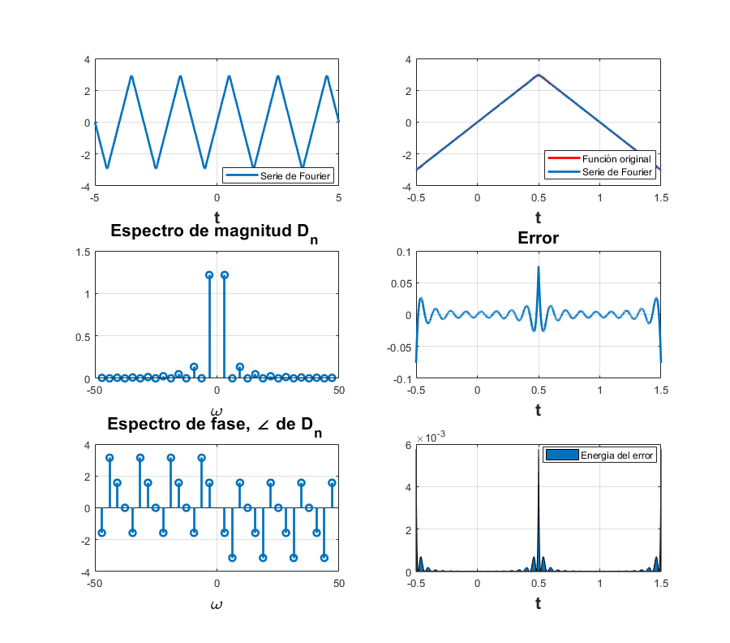
Problema 3: Ejemplo 6.4
Exponencial 4 armonicos
clf; d0=1/2; dn=@(n) sin(n*pi/2)./(n*pi); t0= -pi; tf= pi; f=@(t) (0.*(-pi<=t<=-pi/2 & pi/2<=t<=pi))+(1.*(t>-pi/2 & t<pi/2)); armo=4; a=-5*pi; b=5*pi; sfc(t0,tf,dn,d0,f,armo,a,b)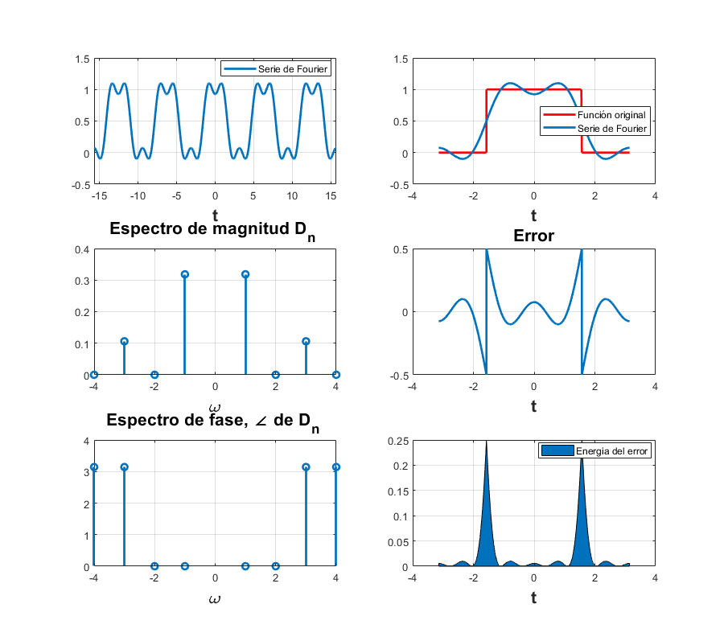
Exponencial 15 armonicos
clf; d0=1/2; dn=@(n) sin(n*pi/2)./(n*pi); t0= -pi; tf= pi; f=@(t) (0.*(-pi<=t<=-pi/2 & pi/2<=t<=pi))+(1.*(t>-pi/2 & t<pi/2)); armo=15; a=-5*pi; b=5*pi; sfc(t0,tf,dn,d0,f,armo,a,b)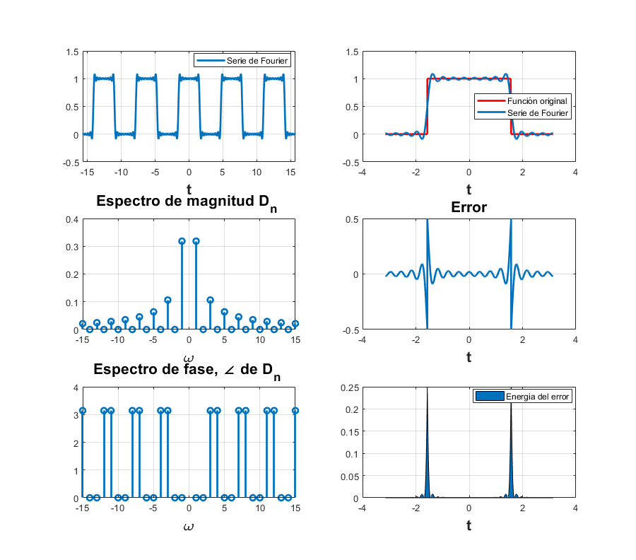
Problema 4: Ejemplo 6.5.
Exponencial 4 armonicos
clf; d0=2/pi; dn=@(n) 2/((pi)*(1-4*n*n)); t0=0; tf=pi; f=@(t) abs(sin(t)); armo=4; a=-2*pi; b=3*pi; sfc(t0,tf,dn,d0,f,armo,a,b)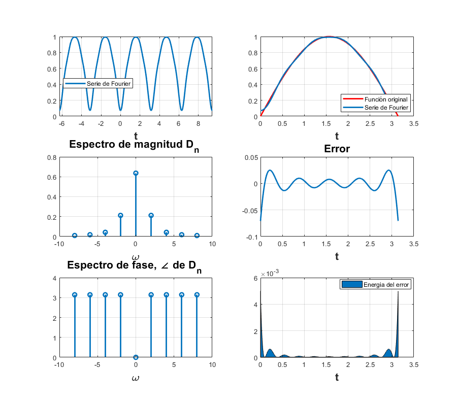
Exponencial 15 armonicos
clf; d0=2/pi; dn=@(n) 2/((pi)*(1-4*n*n)); t0=0; tf=pi; f=@(t) abs(sin(t)); armo=15; a=-2*pi; b=3*pi; sfc(t0,tf,dn,d0,f,armo,a,b)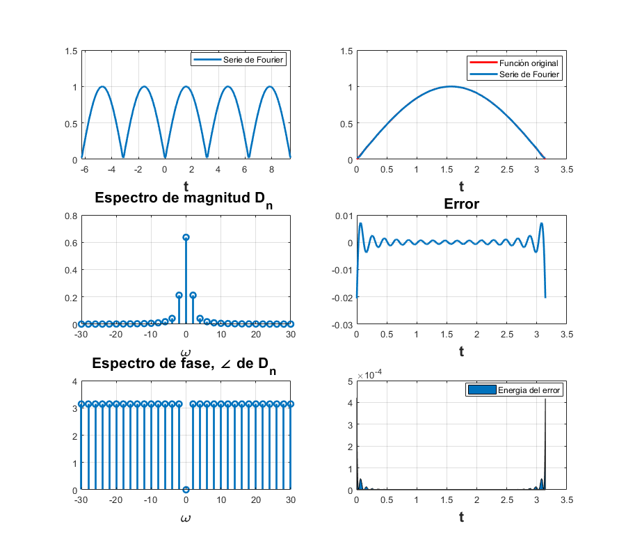
Problema 5: Ejemplo 6.7.
Exponencial 4 armonicos
clf; d0=1/3; dn=@(n) 1/3; t0=-3/2; tf=3/2; armo=4; a=-5; b=5; sfc2(t0,tf,dn,d0,armo,a,b)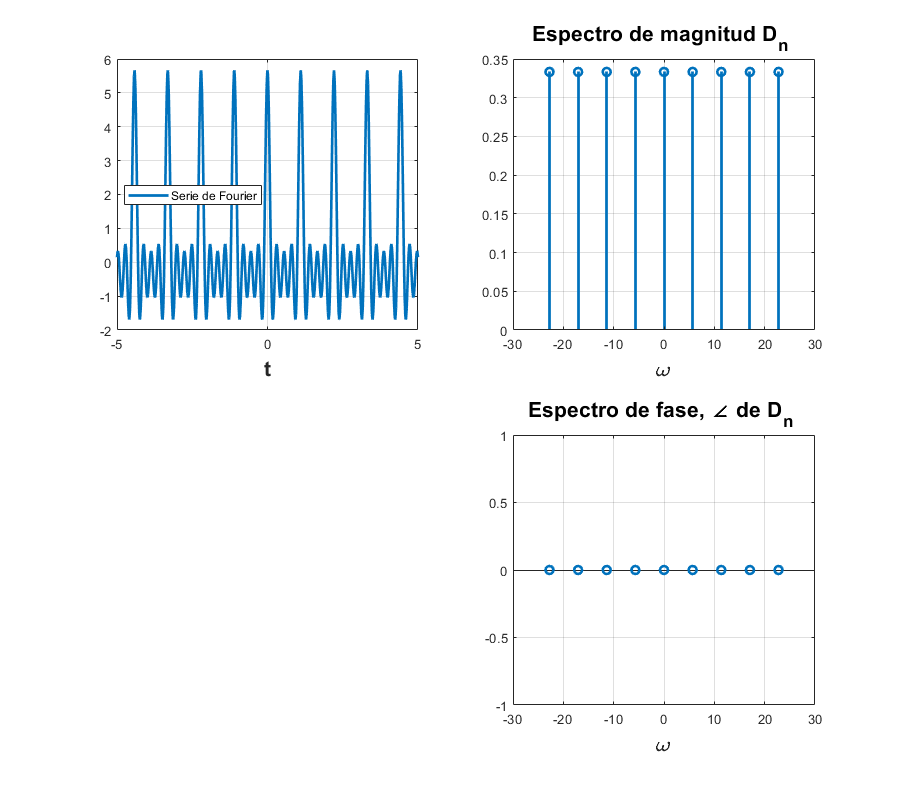
Exponencial 15 armonicos
clf; d0 = 1/3; dn =@(n) 1/3; t0= -3/2; tf= 3/2; f2= 1; armo=15; a2=-5; b2=5; sfc2(t0,tf,dn,d0,armo,a,b)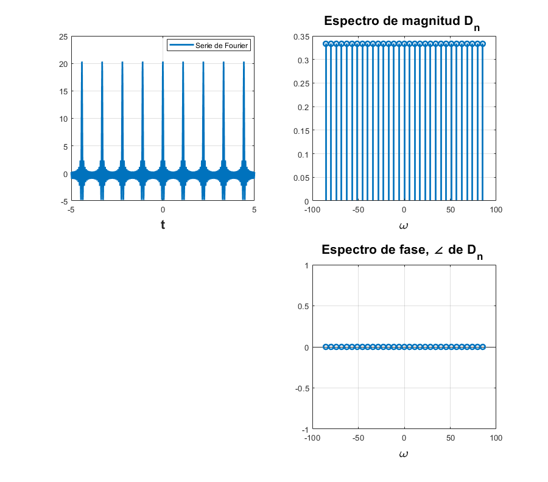
Problema 6: COMPUTER EXAMPLE C6.2
Codigo de Lathi COMPUTER EXAMPLE C6.2 aplicado al ejemplo 6.2 de Lathi
C62()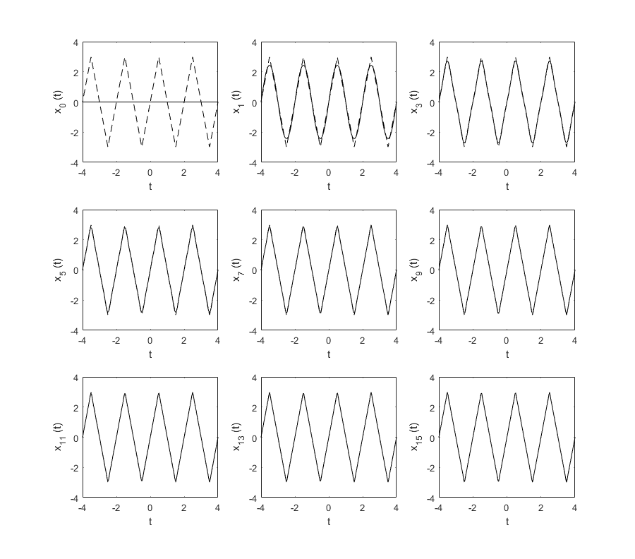
Problema 7
Funcion Trapecio
function I = Trapecio(g,a,b,m) close all h=(b-a)/m; s=0; for i=1:m s=h/2*(g(a+(i-1)*h)+g(a+(i)*h))+s; end I=s;
Tabla de comparacion de valores Dn
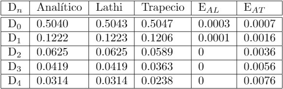
Concluciones
En el Problema numero 7 calculamos los valores de Dn por tres metodos distintos. El metodo analitico es el calculo del Dn por los metodos de integracion ya conocidos, para el calculo siguiente utilizamos el codigo COMPUTER EXAMPLE C6.4 del libro Lathi y finalmete para el metodo del trapecio usamos una funcion del metodo del trapecio compuesto para quince trapecios.
En la tabla se puede observar que los valores de Dn varian segun el metodo usando, tomando como base el metodo analitico que es el metodo que debe de empliarse para este calculo, comparamos el error entre este ultimo y los otros dos metodos, Lathi y Trapecio respectivamente, de aqui podemos observar que el error es minimo con el codigo de Lathi y para el trapecio es mayor sin embargo solo estamos utilizando 15 trapecios por lo cual entre mas trapecios usemos menor sera el error.
Referencias
Lathi